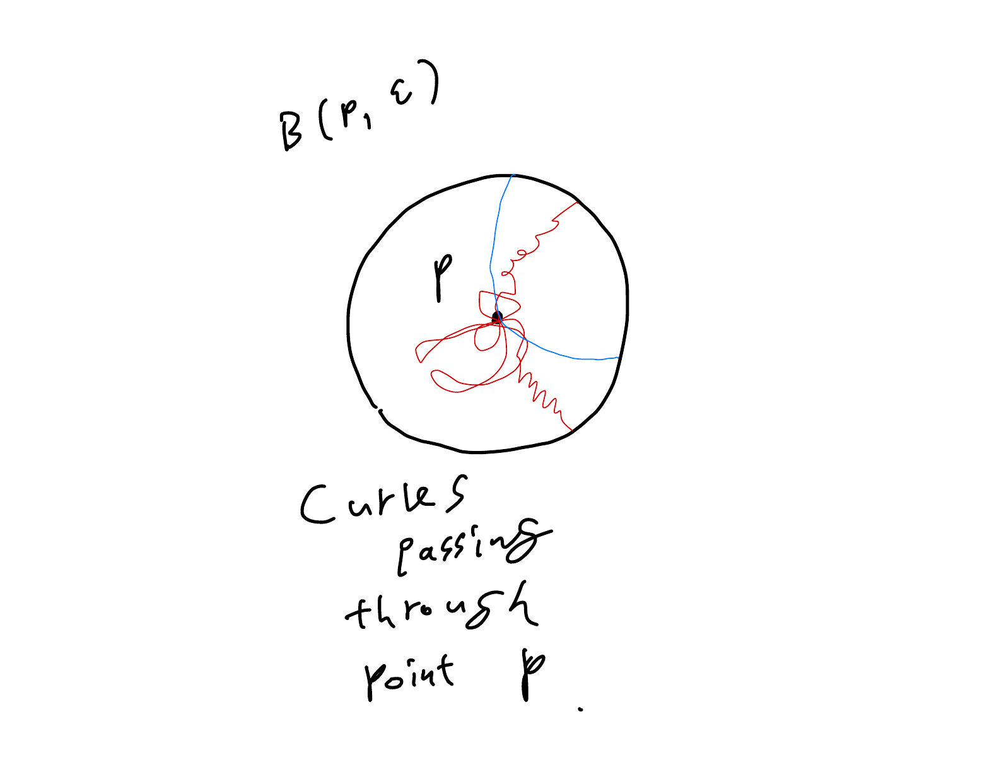
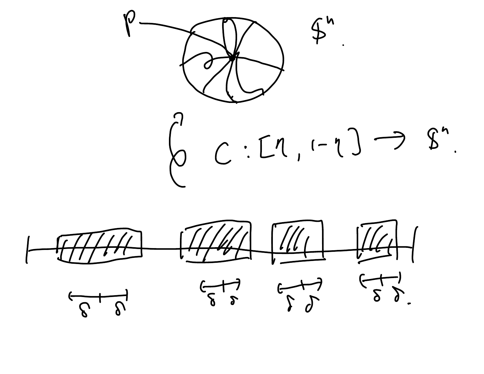
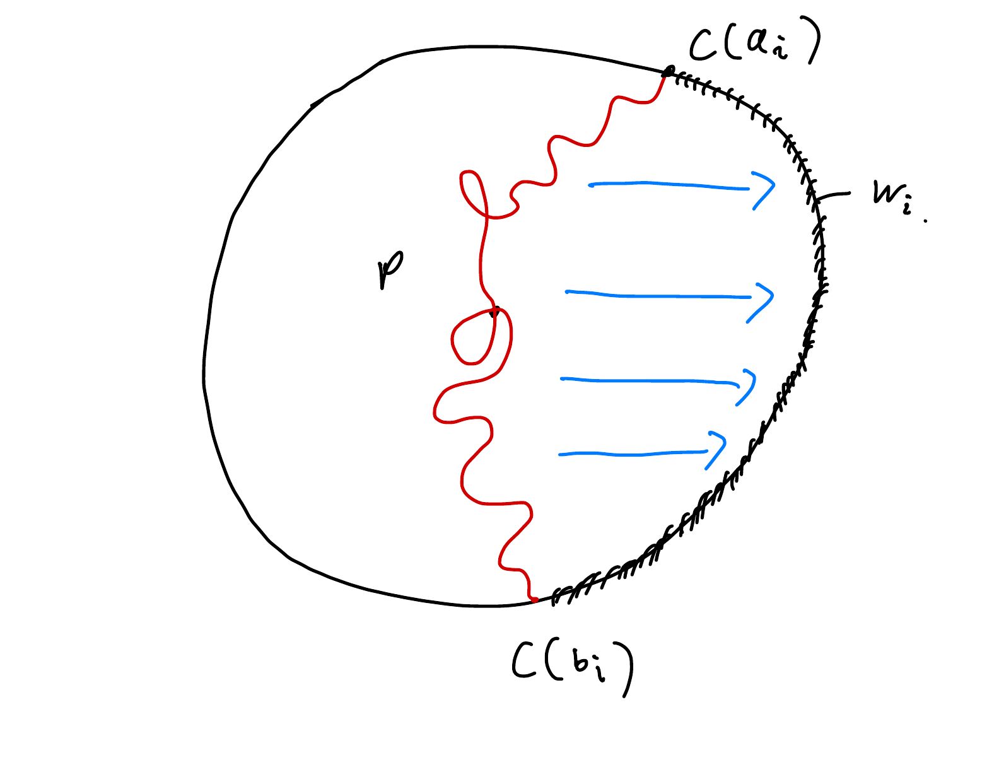
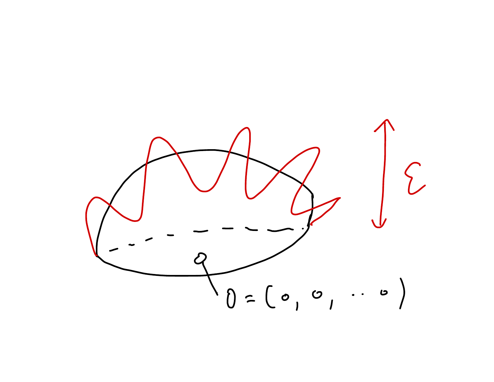
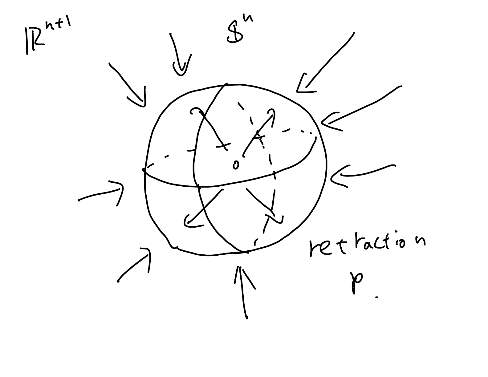
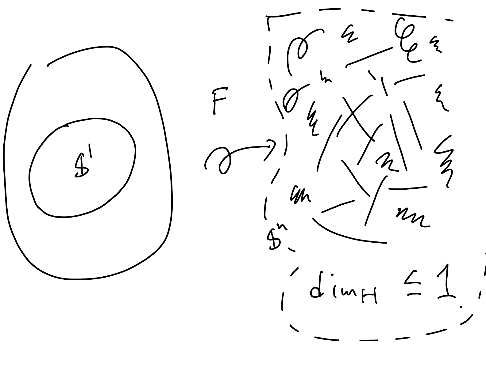

二次元以上の球面の基本群：全射を回避する話
1 イントロ
この文章では で次元球面を表すことにする． この文章では次元が以上の 球面の基本群が自明というやつの面白いところだけ紹介する． つまり次の定理を紹介する．
定理 1.
とする． このとき 任意の連続写像 は全射ではない連続写像にホモトピックである． さらに基点を与えたときには基点を動かさずにこのような(と基点を動かさないホモトピー)を見つけることができる．
この定理を用いると， からの像に入っていない点について がに同相であるということと，が可縮であるからが一点に ホモトピックであることがわかり，が自明であること がわかる． どんなについても連続全射はつねに存在するので， 基本群 の同定にはこのような 空間充填曲線を考える必要が付きまとう． この種の曲線の構成は数学書[1]を読むといい． そういえばこういう全射を回避している議論をあんまり見たことないので書いてみた．このことはおそらくこの文書の筆者が代トポの本をちゃんと読んでないことが原因だと思われる．
2 証明その１
定理1の証明をする． まず最初に位相的な証明を紹介する． 面倒なので定理環境使ってないけど許して． この定理の証明は 論文 [8] のアイデアによっている． この論文 [8] 自体はDixon[7] による コーシーの積分定理の簡単な証明の補足である． 論文 [8] の議論の中で， 与えられた閉曲線 上の点 について， 曲線 を，考えている積分の値が変わらない程度に， 尚且つ を通らない曲線 にちょっと修正する議論を参考にしている． この話ははてなブログ電波通信の記事 [5] でも紹介したことがあるので， それを覚えていたので思いついた．
それはさておき証明に入る． 最初に注意するが， 写像 は全射と仮定しても良い． 全射ではない場合にはそれ自体を として取れるからである．
次に を の原点を中心とする半径 の 球面だとカノニカルにみなす． そして にはから誘導される ユークリッド距離 を与えることにする． 今からは を の と を同一視した空間とみなす．
さて の異なる2点 をなんでもいいので取る． 今から を含まないように をホモトピーで変形する． 基点がある場合には がそれであるように取ることにしよう． さらに と仮定する．このようにしても一般性を失わない． 基点がある場合には の基点は としよう． そして を適当に固定して 距離による を中心とした 半径の 閉球 を考える． ここで を十分小さく取って であり， さらに は 次元閉球体 と 同相であるとしても良い． 例えば は北極点になっているとして， が の上半球に含まれているとしてもよく， このとき 座標をにする射影 がと の同相を与える． 実は上のセッティングでさらに とを北極と南極として取ったときには， は より真に 小さければ今から行う議論は 可能であることがわかったりする． まあ細かい話は置いといて， とにかく小さく取れば良いと思う．
次に とする． つまり によって に映るような元全体が である． ここで であり， なので で尚且つ に注意しよう． すると十分小さい を取って でありさらに とできる． これは だからである． またこのとき かつ に注意しよう． ここからしばらくは， 写像 は の部分集合 の上で考えて， この区間 には一次元ユークリッド距離 が入っているとする．

このとき はコンパクト空間からの連続写像なので， 一様連続である． よって先に与えた に対して が存在して， となる任意 のについて 常に となる． 対偶をとると， 任意の が 満たす ならば常に を満たす． 今からこのような を一つ固定して 話を進める．
さて逆像 の連結成分 であって となるものについて考える． このとき 任意の は の内点であり， さらに となる． 今からこれを示そう． 点 に対して と定義する． 中間値の定理， というか連結空間の連続像が連結であることから， この右辺の集合が空でないということがわかる． 細かい話は省略する． さらに， 再び中間値の定理(連結空間の連続像が連結)から， で定義された は を満たす． 以上から かつ となることがわかる． 同様にしてを と定義すると， かつ となる． よって なのではを内点にもつ． 先の一様連続性の議論と から がわかるので， がわかる．
ここで の連結成分で， 集合 と交わりを持つもの全体 を考える． ここで添字は単射であるようにとる． するとこれらは の連結成分であるから ならば である． このとき上で行った議論から， 各 は半径の開球を含む． 空間 はコンパクトなので その-net は常に有限でなければならないので は有限集合でなければならない
ここで注意： 集合 は一般的に有限集合ではない． 写像 は一般に を無限回通過するが， を通過してさらに からの 距離がちょうど になるような点から始まって終わるような区間の数が有限個ということが上で証明したことである． 上の議論で定義した と について， が だとしても かつ となることがありうる． 写像 がある区間上で定数 を取り続ける状況を考えると， このような事情は分かり易いと思う．
さて，各 は の連結部分集合でもあり， さらに内点を持つので は と書くことができる． ここで とする．

いまから を示そう． 背理法で示す． もしも ならば， 写像 の連続性から を含む開区間 で が を中心とする 半径 開球 に含まれるものが存在する． この議論をするとき かつ であることから と取れたりして区間の端っこで開集合が半開区間の形になるとかそういうのを考えずに済む． さて， このとき， よりも真に大きい集合 もの連結成分となるが， これは が の連結成分であるということに反する (連結成分の定義を思い出して欲しいのだが，極大な連結部分集合で定義されるのだ)． 同様に がわかる．
ここで と 次元閉球体 を同一視する． 上の議論から の境界 について となることに注意しよう． そして各 について と を結ぶ の境界 上の曲線 を考える． そして ホモトピー を 上では とし， それ以外では常に として定義する． そして と定義すると， 写像 の像は を含まない． を含む曲線分は でちゃんと動かしての境界になっているからである．

追記１： 精密にするならば と の同相写像で写して 線分で繋いでさらに に引き戻す操作 をする必要があるが，今このように注意すれば十分なので省略する．
追記２： さらに精密には の連続性を示すときに任意の について と であるから， 写像がいい感じに張り合わされて 連続性がわかるという議論が必要である． 一般に位相空間 と ， そして の有限の閉集合族 と 連続写像 が 上で を満たすならば はwell-definedに貼り合わされるし， 連続でもあることが証明できる． これは連続写像の定義に閉集合の逆像が閉集合というやつと， 今考えている族が有限であることからすぐにわかる．
以上で定理1の証明が終わる．
3 証明その２
次に 滑らかな写像を使った証明を紹介する． この世の中， 多様体を使う人がなんか多いので， そういう人のために そのそれっぽい証明も紹介する．
最初に注意するが， 写像 は全射と仮定しても良い． 全射ではない場合にはそれ自体を として取れるからである．
今から に対して滑らかな写像 が存在して は にホモトピックであることを証明する．
いま を の点 で を満たすもの全体の集合とカノニカルに同一視する．
上でいう滑らかな写像の意味 は多様体の間の 級写像ということだが， 上のようなカノニカルな同一視をした場合には， 写像 が滑らか であるとは， これを から への写像とみなして， さらに 巻きつき写像 を考えたときの， 合成写像 が普通の意味で 級写像という意味でも同じことである．
さて 写像 を と表示する． そして を十分小さくとる． 今回は大体 くらいで十分じゃないかな．
このとき各 について， は周期 の周期関数になっていることに注意しよう． すると三角多項式による近似定理だとか軟化子だとか， ストーンワイエルストラスとか，なんでもいいのでそういう類のやつを使うと， 周期 の滑らかな関数 が存在して 任意の について となる．
ここで基点をつけて考えている場合には， を基点としているとして (ここで は と を同一視して とみなしているという程度の意味なので深く考えなくてよい)， 適当に並行移動したりして となるようにできる． ただし近似の評価が というふうに修正しないといけないが， を小さく取っているので， これから行う議論にはなんの影響もない．

そして を と定義すると， が十分小さいので である． ここでホモトピー を と定義する． すると は と を結ぶホモトピーであり， は滑らかである． ここで注意なのだが， とは限らない! そこでひと工夫する． まず， 任意のについて (基点考えているときは) なので， 任意の について に注意しよう． さらに写像 を
と定義する． するとこの写像 は滑らかな写像であることに注意しよう． このとき について にも注意しよう． つまりは滑らかな写像であってさらに から へのレトラクションであるということである．

そしてホモトピー を と定義する． すると である． また，とは滑らかなので これらの合成である は から への 滑らかな写像である． よって と定義すれば は 滑らかな写像 にホモトピックである．
次に が全射ではないことを証明しよう． これはある程度簡単である． 写像 が滑らか，特に 級 であることとサードの定理から の微分がフルランクではないような点全体 について は零集合である． ここで は一次元で は 次元なので至る所でフルランクではない． つまり であり が零集合ということなので に含まれない点 が存在する． よっては全射ではなく， とすれば定理 1 の証明は終わる．
追記１： (滑らかな場合の)サードの定理の証明などは [2]や[3]を参照のこと． 一応，はてなブログ電波通信の記事 [6]にも紹介されている． さてここでサードの定理を用いたが， 定義域の次元が行き先の次元より真に小さい場合には， サードの定理は意外と簡単に証明できることを注意しておく．なんとなれば， 今ここで と にはユークリッド空間から誘導される距離を導入する． このとき は 級なので， これらの距離について 局所リプシッツである． 空間 はリンデレフなので可算個の開集合 が存在して は 上でリプシッツである． よって各 について のハウスドルフ次元は より小さい． よってこれら可算個の和集合 のハウスドルフ次元も高々 である． さらに上で導入した距離について のハウスドルフ次元は なので は の 次元ハウスドルフ測度について零集合であるから は全射ではない． この証明でユークリッド距離を導入しているのはそこまで自由に動かせない． 可微分写像はユークリッド距離を相性がいいんだと思うと良いと思う．
実はサードの定理に出てくる 「零集合」 というのは 次元ハウスドルフ測度による零集合と一致するのである． というか，そこから逆算して測度を導入せずに「零集合」の概念を導入しているんだと思う． さらにいうとそれは， その多様体の上の どんなリーマン計量によって誘導されるリーマン体積による測度による零集合とも一致する． これらの話は多様体が局所的に通常のユークリッド空間とリプシッツであるとか， 級写像は全て局所リプシッツとか， そういう話から直ちにわかることである． 上の証明は 「ハウスドルフ次元」というわけわからんものを いきなり使っているが， 証明をよく見ると通常のサードの定理(定義域の次元が低い場合)の証明と同じことをやっていることがわかる．
まあわかんなくても， 見る人が見ればそうなっているんだなって思ってもらうといいんじゃないかなと思う． ハウスドルフ次元などについては [4]などを参照のこと．

追記２： 上の証明の議論で レトラクション を用いたが， 多様体論的にはこれは多分 の管状近傍を使って写像の近似をしたというふうに まとめることができるんじゃないかと思う．
追記３： 上のサードの定理の議論から， と 滑らかな写像をホモトピーで 繋ぐのではなく， 局所リプシッツな写像や， 区分的関数に結べば 定理 1 は証明できることがわかる． でも滑らかな写像で近似するみたいなそういう話題は， 滑らかな写像の方が豊富だと思うので， 定理を証明するには強すぎる性質だが， ありがたく使わせてもらおう． 先駆者に感謝．
追記４：証明の中で近似定理を用いたが， ここでの近似定理は近似をするというよりは， とホモトピーで結べてさらにを回避するのを保証する程度の役割しかなく，はそんな小さくとらなくても良い．おそらくをよりも真に小さくすれば どれでも用を成せるだろう．
証明終わり．
位相的な証明の方が，筆者は好きです．
References
- [1] H. ザーガン 著, 鎌田清一郎 訳, 「空間充填曲線とフラクタル」, シュプリンガー・ フェアラーク東京， 1998年
- [2] J. M. ミルナー 著, 蟹江幸博 訳 「微分トポロジー講義」 丸善出版, 2012.
- [3] M. W. ハーシュ 著, 松本堯生 訳, 「微分トポロジー」, 丸善出版, 2012.
- [4] K. ファルコナー著, 服部久美子・ 村井浄信 訳 「フラクタル幾何学」, 共立出版, シリーズ“新しい幾何学の流れ”， 2006.
- [5] はてなブログ電波通信の記事「コーシーの積分定理」 https://concious4410.hatenablog.com/entry/2015/09/15/001005
- [6] はてなブログ電波通信の記事「サードの定理(未完成)」 https://concious4410.hatenablog.com/entry/2018/10/14/145403
- [7] J. D. Dixon, A brief proof of Cauchy’s integral theorem, Proc. Amer. Math. Soc. Vol. 29 (1971), 625-626. DOI: 10.2307/2038614
- [8] P. A. Loeb, A Note on Dixon’s Proof of Cauchy’s Integral Theorem, Amer. Math. Monthly Vol.98, No.3 (Mar.,1991), 242-244. DOI: 10.2307/2325029